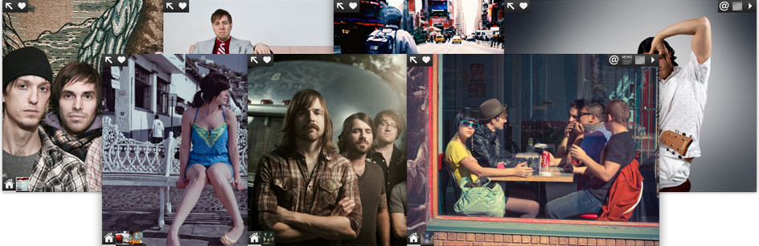

Features
Works on multiple devices and sizes
(iPhone, iPad, iPod touch, landscape
and portrait), with more to come.
Beautiful full-screen photos and album
covers for backgrounds (or choose from 10
built-in themes).
Automatically grabs your latest news and
shows from RSS or Twitter, saving you time
on updates.
Showcase multiple albums that fans can
browse in a fun and engaging way.
Pop-ups show fresh news and info, including
links and live photos, to engage with fans
while they listen.
Fully customizable contact page to plug your
newsletter, Facebook page, booking info, etc.
Integrates seamlessly into your existing
website, and it's 100% free and open
source software.
Easy-to-use password-protected admin area
for keeping your mobile site current.
Ties into Band-o-rama, the free iPhone &
iPad app where listeners discover and share
new music.
Checklist
You'll need a few things to setup a mobile site for your band:
- Your own website, not just a Myspace or Facebook page.
- Your website must support PHP5 (most hosts do).
- An FTP program to upload files to your website.
- MP3 files of some of your songs.
- A photo editing program to resize background images.
Getting Started
- Download a copy of the Band-o-matic software from this page:
http://github.com/jbroadway/band-o-matic/downloads
- Unzip the download then use an FTP program to upload it to a folder
named 'm' on your website. This will be where people find the mobile
version of your site from now on (e.g., www.bandname.com/m).
- Still in your FTP program, edit the file permissions on the folders
m/admin/config and m/admin/files and set the permissions to 0777 or
read/write/execute for all. Make sure to click the option that says
something to the effect of "Also change permissions on files inside this
folder." For example in Transmit on the Mac,
right-click the folders and choose "Get Info", then under
"Permissions" check off all the boxes, then click "Apply to enclosed items."
Using FlashFXP on Windows, you would right-click the folders and choose
"Attributes (CHMOD)", check off all the boxes, then click "Apply changes recursively to sub-folders and files".
- Now open the
m/admin/config folder and edit the settings.php file
found inside. Change the values for admin_username, admin_password,
and default_city and save the file. You can now close the FTP program.
- Open your web browser and go to
www.bandname.com/m/admin on your
website. Log in with the admin username/password from step 5. Bookmark
this or save the link somewhere because this is where you'll go to keep
your mobile site up-to-date. Follow the steps on each tab to setup your
new site.
- Test it out on your iPhone/iPad and make sure it looks good. It should
also work in any web browser, but the experience is tailored a bit to
mobile devices.
- To redirect iPhone/iPad users from your main website so they automatically
see your new mobile site, add this line to the
<head> section of your
main site's index.html file: <script src="/m/js/redirect.js"></script>
- Now go to http://www.band-o-rama.com/artists and register your band
for the Band-o-rama service so that listeners can find you on there!
Credits
Band-o-matic was created by
Johnny Broadway
and released under the
GPL Version 2
license.
The Band-o-matic logo was designed by
Rachael Hosein.
Band-o-matic also makes use of a few 3rd-party open source libraries: